select指令-ROUND、CEILING、FLOOR、SQRT、SQUARE、UPPER、LOWER、LEN、DATALENGTH、CHARINDEX、LEFT、RIGHT、SUBSTRING、REPLICATE、REPLACE
一、select基本輸出
語法：SELECT expression
(1)、輸出字串
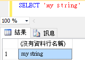
(2)、輸出運算式
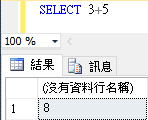
(3)、同時輸出多個項目
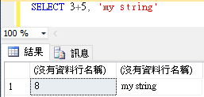
二、select 產出固定資料的結果集
(1)、使用 VALUES 表達式建立一個包含固定資料的結果集
1 | SELECT * |
(2)、使用臨時查詢，利用 UNION 方式，直接指定固定的值
1 | SELECT 1 AS ID, 'John' AS Name |
三、常用的數學函數
(1)、四捨五入
語法：ROUND(numeric_expression , length)
(a)、四捨五入到小數點以下第一位
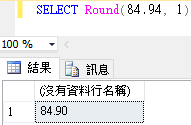
(b)、四捨五入到整數第一位
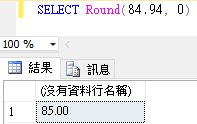
(c)、四捨五入到整數第二位
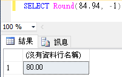
(2)、天花板(CEILING)與地板(FLOOR)函數
(a)、(CEILING)小數以下無條件進位至整數
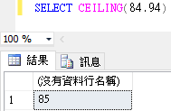
(b)、(FLOOR)小數以下無條件捨去至整數
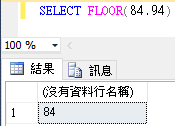
(3)、開平方根(SQRT)與平方(SQUARE)函數
(a)、開方
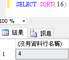
(b)、平方
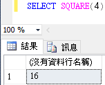
(4)、絕對值函數
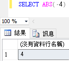
四、常用的字串函數
(1)、大小寫轉換函數
轉成大寫
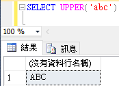
轉成小寫
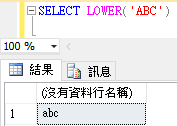
(2)、計算字串長度函數與字串所佔的空間
「ABC」字串長度為3
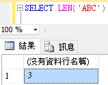
中文字「我」所佔的byte數為一個字2byte
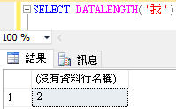
(3)、取得一個子字串在另一個字串起始位置
語法：CHARINDEX(pattem , source [ , start_location ] )
pattem：指定搜尋樣本，可以是字元或是字串
source：來源字串
start_location：指定從何處開始搜尋，起始值為1，代表從第一個字開始找。
(a)、範例
從ABCDE字串中找尋B字元的位置為2
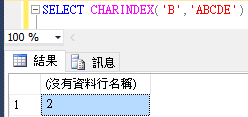
從來源字串的第三個字開始找尋A字元的位置為5
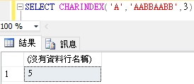
(4)、取字串的左右邊的子字串
從左邊開始取兩個字元
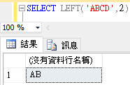
從右邊開始取兩個字元
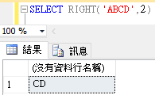
(5)、取一個字串中的子字串
語法：
SUBSTRING(source , start_location , length )
(a)、範例
從ABCDE字串中的第二個位置取出三個字元
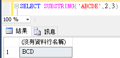
(6)、重複字串函數
其功能為將指定字串重複N次，如下範例
目地為把「*」字元重複三次
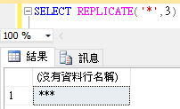
(7)、取代函數
語法：
REPLACE ( string_expression , string_pattern , string_replacement )
例如將小寫的a取代成大寫的A
SELECT REPLACE('abcd','a','A')
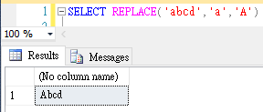